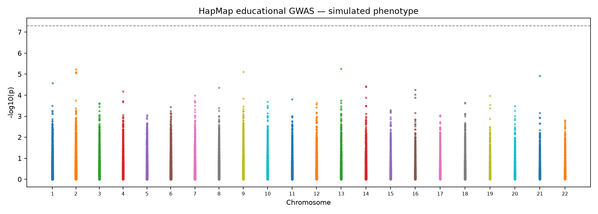
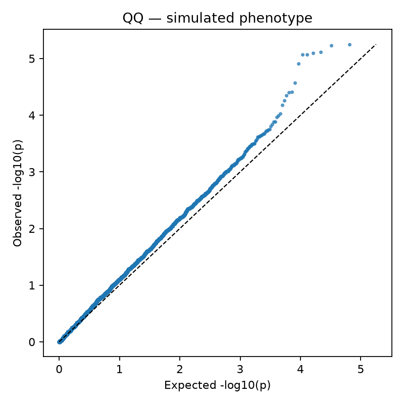
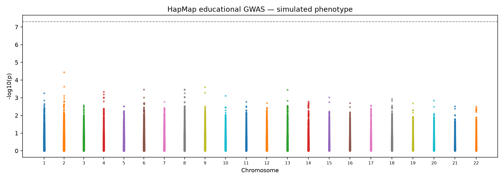
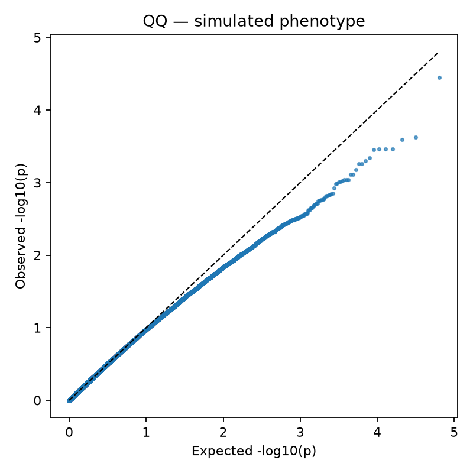
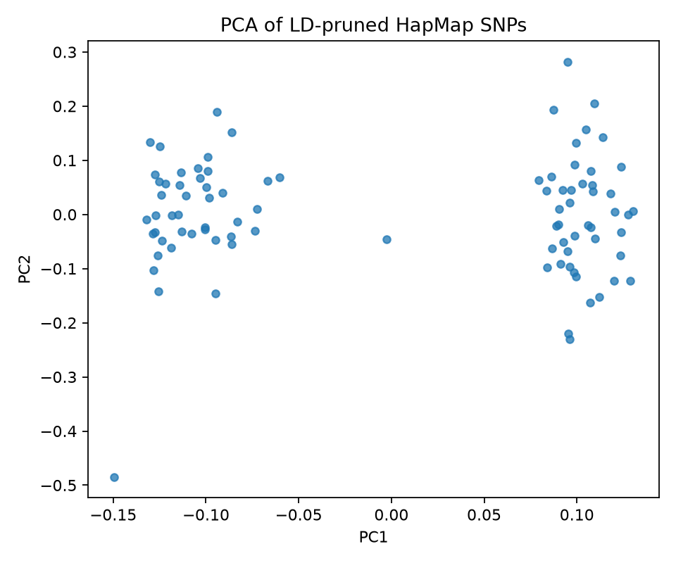

Demo only. HapMap genotypes are real; phenotype was SIMULATED. Only 89 participants; not powered for disease inference.
| before_samples | 89 |
| after_samples | 89 |
| before_variants | 83534 |
| after_variants | 64651 |
| mean_sample_missingness | 0.005590157303370787 |
| mean_snp_missingness | 0.005590587425479445 |
| unadjusted_tested_snps | 64651 |
| adjusted_tested_snps | 63465 |
| unadjusted_smallest_p | 5.586e-06 |
| adjusted_smallest_p | 3.544e-05 |
| phenotype | SIMULATED tutorial binary disease status; not a real phenotype |





Review full adjusted results at gwas_adjusted.assoc.logistic. PLINK HWE and frequency filters are for teaching, not universally appropriate QC thresholds.